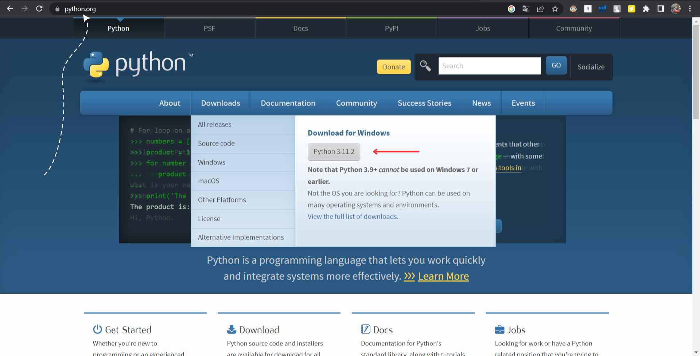
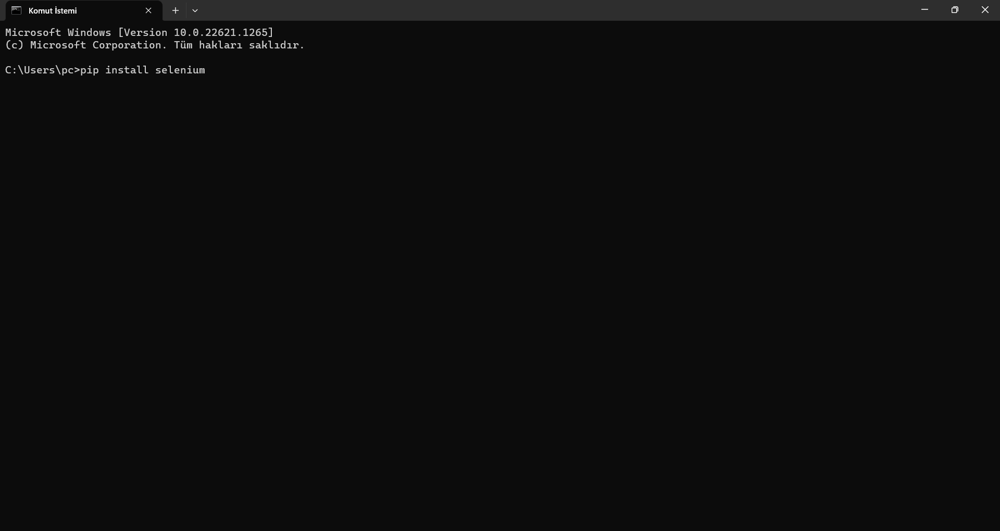
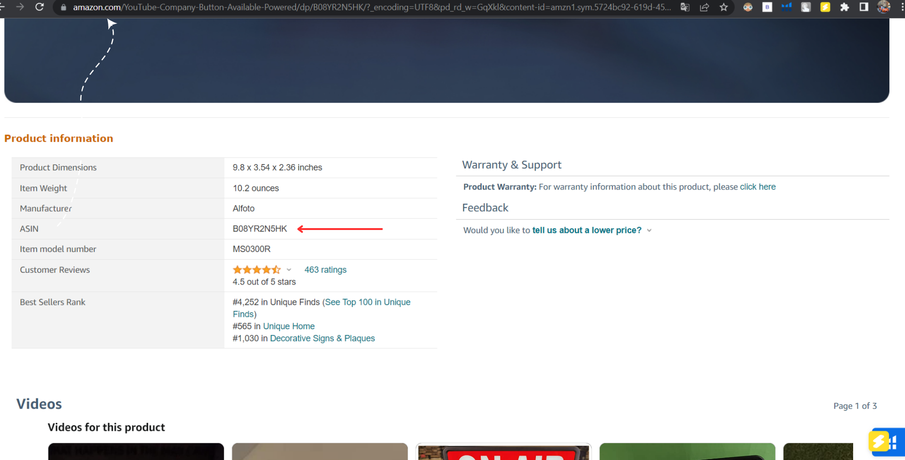
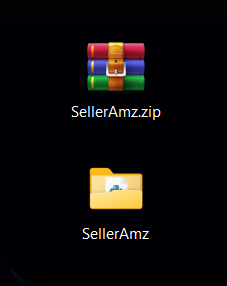
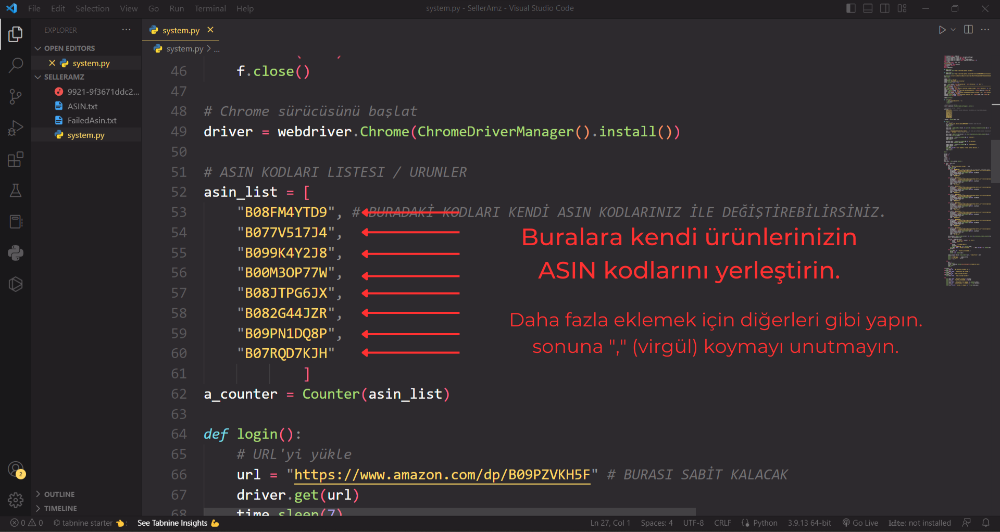

1. Adım:
Python'ı kurun.
2. Adım:
Gerekli modülleri kurun1. Windows Terminali (cmd) açın.
2. Terminale sırasıyla şunları yazın ve kurun.
pip install selenium
pip install colorama
pip install tkinter
pip install os-sys
pip install collections
pip install webdriver-manager
pip install chromedriver-py

3. Adım:
Ürünlerinizin ASIN kodlarını toplayın
Buradan tüm ürünlerinizin ASIN kodlarını toplayın ve sıradaki aşama için saklayın.
4. Adım:
ZIP paketini klasöre çıkartın
5. Adım:
Klasör içerisinde "system.py" doysasını açın1. Dosyayı açmak için bir kod editörü kullanmanızı şiddetle tavsiye ediyoruz. (Ör: Visual Studio Code)

6. Adım:
Kodların içerisine ASIN'leri yerleştirin1. Dosyayı açıp kodlara ulaştıktan hemen sonra sayfanın biraz aşağısında "asin_list" yazan değişkene örnek olarak birkaç tane ASIN kodu yazılmıştır. Sizler de bu kodları silerek kendi kodlarınızı yerleştirebilir veya çoğaltabilirsiniz.

7. Adım:
Son adımı uygulayın ve bitirinKod sayfasının biraz aşağısında yer alan "for asin in asin_list" kısmına gelin ve aşğaıda ki yönergeleri takip edin.
Çalıştırın:
Yazılımı çalıştırınNot:
Önemli NotBu yazılımın çalışması için bilgisayarınıza "chrome-driver" dosyasının yüklü olması ve yazılım ile aynı dizinde olması gerekmektedir.
BURAYA TIKLAYARAK İNDİRME WEB SİTESİNE GİDEBİLİRSİNİZ
Öğren:
Dosyaları tanıyalım"FailedAsin.txt" adı altında olan dosya fiyat kontrolü veya stok kontrolü sırasında belirlediğiniz kriterlerin dışında çıkan ürünlerin eklendiği dosyadır.